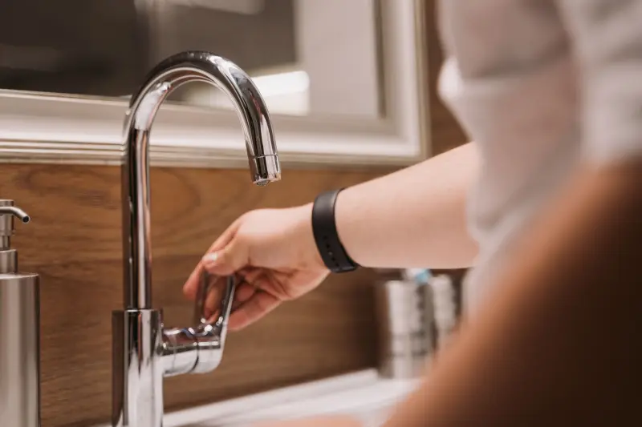
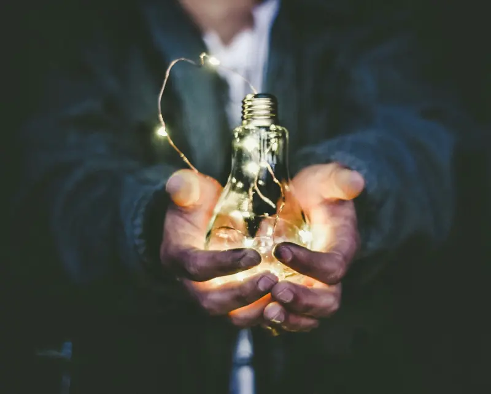
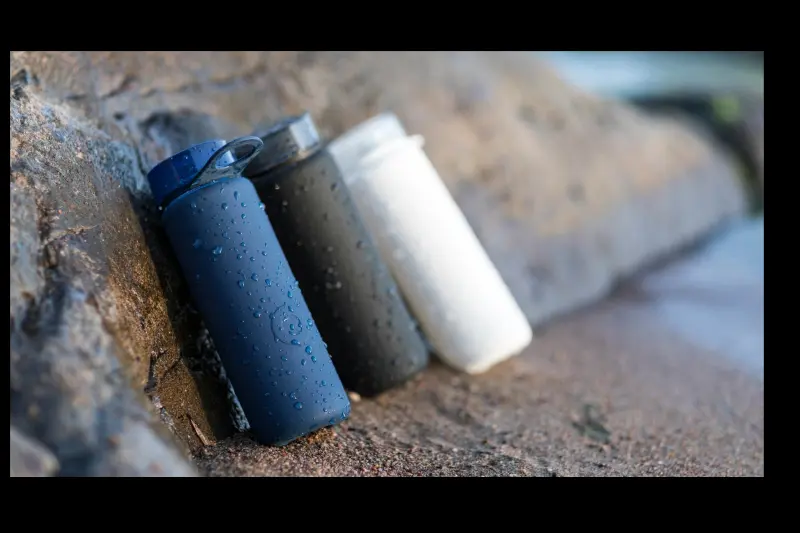
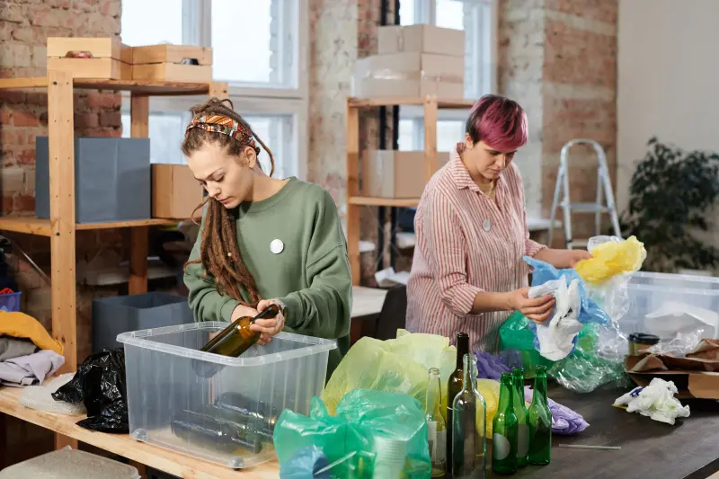
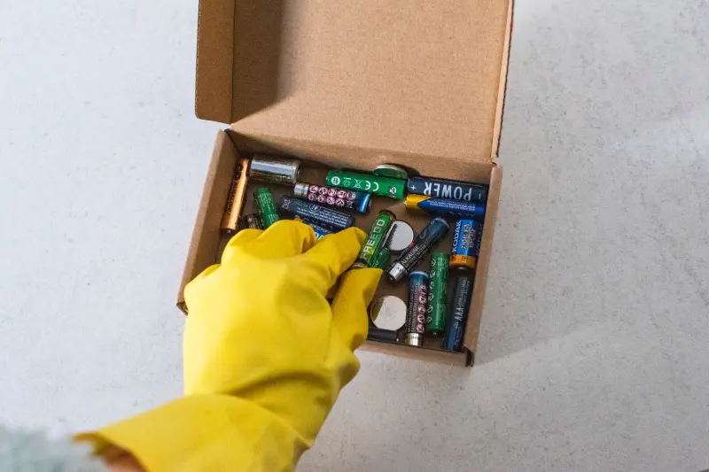
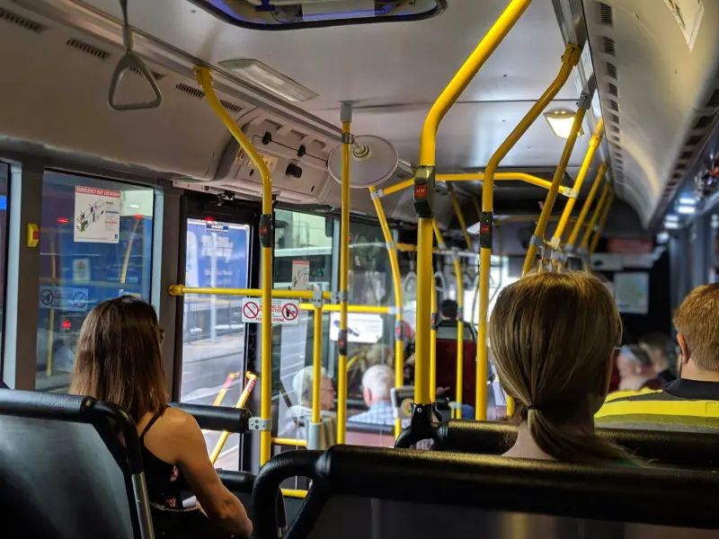
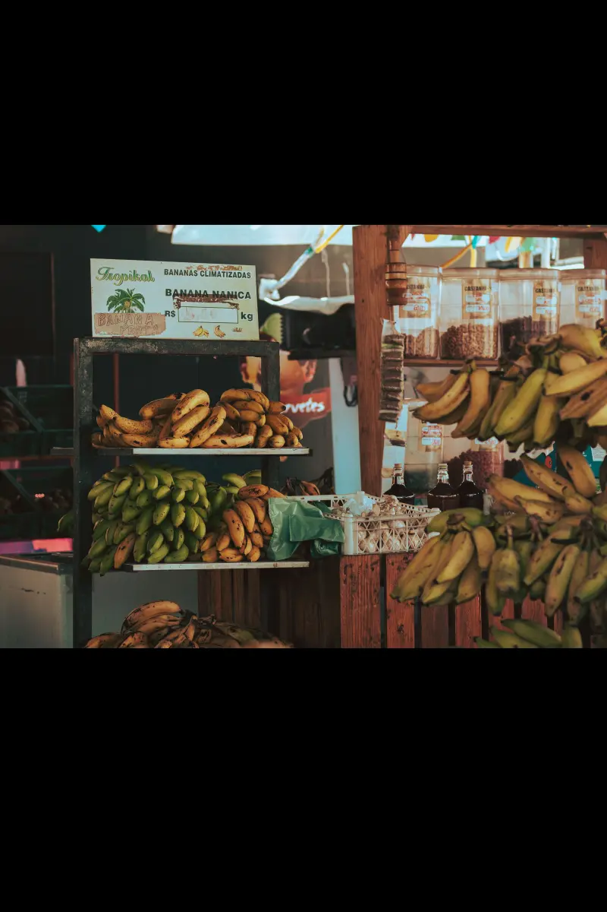
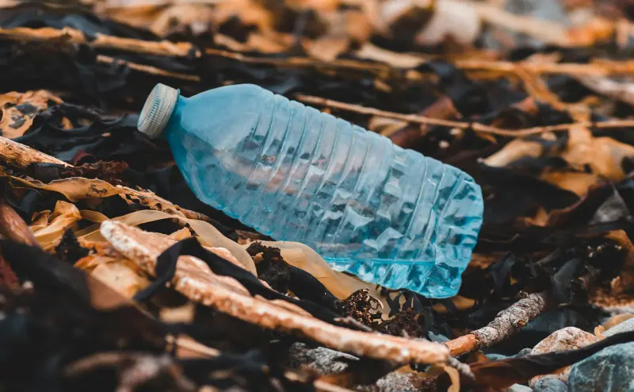
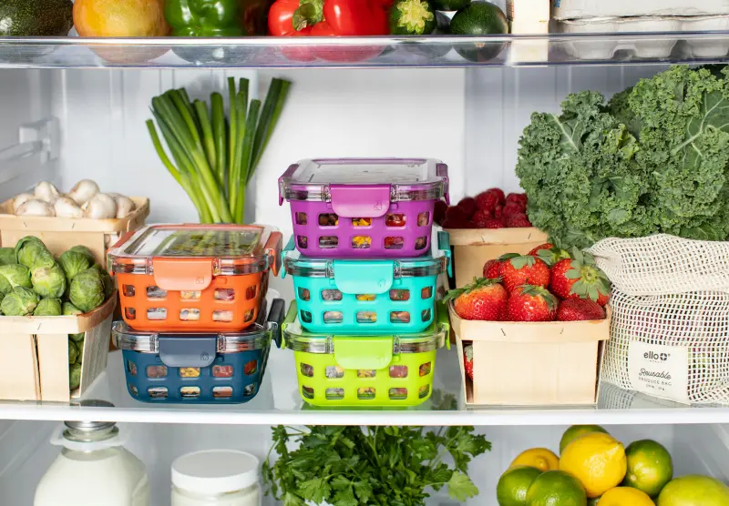

Poupe água
Feche a torneira ao escovar os dentes, reduza o tempo do banho e reaproveite água sempre que for possível.
Pequenas atitudes que contribuem para um dia a dia mais sustentável.

Feche a torneira ao escovar os dentes, reduza o tempo do banho e reaproveite água sempre que for possível.

Apague as luzes ao sair dos ambientes e retire aparelhos sem uso da tomada.

Evite copos e garrafas descartáveis sempre que possível.

Separe materiais recicláveis dos resíduos orgânicos e verifique como funciona a coleta seletiva em sua cidade.

Leve pilhas e baterias usadas a pontos de coleta específicos. Esses materiais não devem ser descartados no lixo comum.

Sempre que possível, utilize ônibus, bicicleta, caminhada ou transporte compartilhado para reduzir a emissão de poluentes.

Comprar de produtores locais fortalece a economia da região e pode reduzir os impactos causados pelo transporte de mercadorias.

Evite canudos, copos, sacolas e talheres descartáveis. Prefira alternativas reutilizáveis sempre que estiverem disponíveis.

Planeje suas compras, armazene os alimentos corretamente e aproveite cascas, talos e sobras em novas receitas.